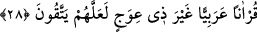
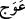
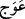
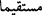
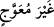
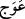
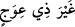
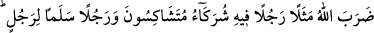
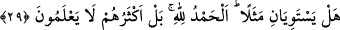

28. Korunsunlar diye, pürüzsüz Arapça bir Kur’an indirdik.
Korunsunlar diye, pürüzsüz Arapça” yâni Araplar’ın diliyle “bir Kur’an indirdik.
“Korunsunlar diye,” ifâdesi, birinci illetten sonra getirilmiş ikinci bir illettir. Çünkü
bir konuyu darb-ı meseller ile anlatmanın faydası, öncelikle onlardan öğüt ve ibret
almak, sonra da takvâyı elde etmektir.
Mânâ şöyledir: Kur’an’da Allah’ın koyduğu sınırları (hudud) koruma ve onda bulunan
mesel ve misallerden öğüt alma hususunda takvâ ehlinin amelini işlerler diye... Belki
onlar onun mânâlarını düşünür de küfür ve yalanlamadan sakınırlar diye...
“Pürüzsüz” hiçbir yönden kendisinde ihtilâf, çelişki, ayıp ve kusur bulunmayan
demektir. “
” ile “
” arasındaki fark şudur: Duvar, çeper ve odun gibi dikilebilen
maddi şeylerdeki eğriliklere “
” denir. Yerde, dinde ve hayat tarzında olan eğriliğe
ise “
” denir. Dolayısıyla mânâlarda ve dikilemeyen aynî varlıklardaki eğrilik
ikincisiyle, mızrak ve duvar gibi dikilebilen varlıklardaki eğrilik birincisi ile ifâde
edilir. Bu sebeple tefsirciler şöyle demişlerdir: Allah Teâlâ, burada daha kısa
olmalarına rağmen “
(dosdoğru)” veya “
(eğriliği olmayan)” buyurmadı.
Bunun iki faydası vardır: Birincisi, “ve onda (Kur’an’da) hiçbir eğrilik var etmedi”
(el-Kehf, 18/1) âyetinde olduğu gibi Kur’an’da herhangi bir yönden eğrilik
bulunmadığını anlatmaktadır. İkincisi, “
” lafzı, aynî varlıklar için kullanılmayan,
sadece mânâlara has kılınmış bir lafızdır.
İbn Abbâs (r.a.) şöyle der: “
” yaratılmamış demektir.” Çünkü, Kur’an’ın
dillerle okunan, kulaklarla duyulan, yapraklara yazılan, göğüslerde ezberlenip korunan
bir kitab olması, onun yaratılmış olmasını gerektirmez. Çünkü burada kasdedilen
Allah’ın, kendi zâtı ile kâim olan kadîm kelâmıdır.
Baklî’nin Hakâik adlı eserinde şöyle der: “Hak’tan Habîbi’nin dilinde ortaya çıkan,
zamanın değişmesiyle değişmeyen, sonradanlık tozlarına bulanmayan, harflerin
eğriltemediği ve zarfların ihâta edemediği kadîm bir Kur’an olarak indirdik.”
Bahru’l-hakâik’de ise der ki: “O (Kur’an) önünden ve arkadasından bâtılın
gelemediği, huzurumuza ulaştıran dosdoğru bir yol (olarak indirdik.)”
Cenab-ı Hak daha sonra yukarıda bahsedilen misallerden birisini getirerek şöyle
buyuruyor: